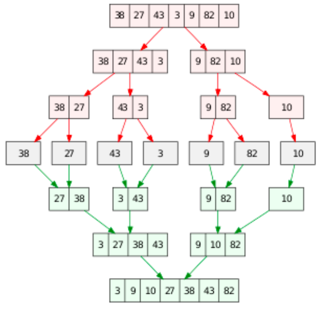

Like Quick sort, Merge sort also falls into the category of divide and conquer approach of problem-solving methodology. Merge sort repeatedly breaks down a list into several sublists until each sublist consists of a single element and merging those sublists in a manner that results into a sorted list.
The first step of merge sort is to divide the array by half until it reaches one element. It starts at the Top and proceeds downwards, with each recursive turn asking the same question such as “What is required to be done to sort the array?” and having the answer as, “split the array into two, make a recursive call, and merge the results.”, until one gets to the bottom of the array-tree. The second step is to compare the elements of each list. If sorting in ascending order, the smaller element among two becomes a new element of the sorted list. This procedure is repeated until both the smaller sublists are empty and the newly combined sublist covers all the elements of both the sublists.
